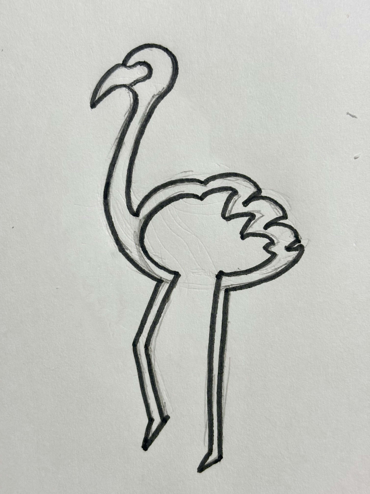
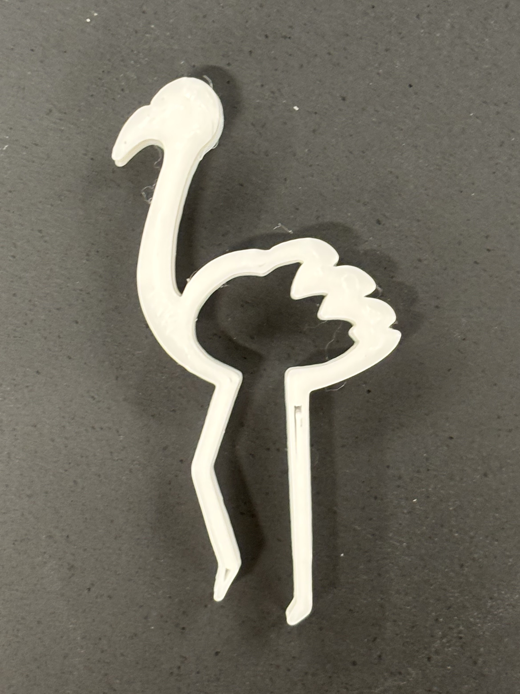
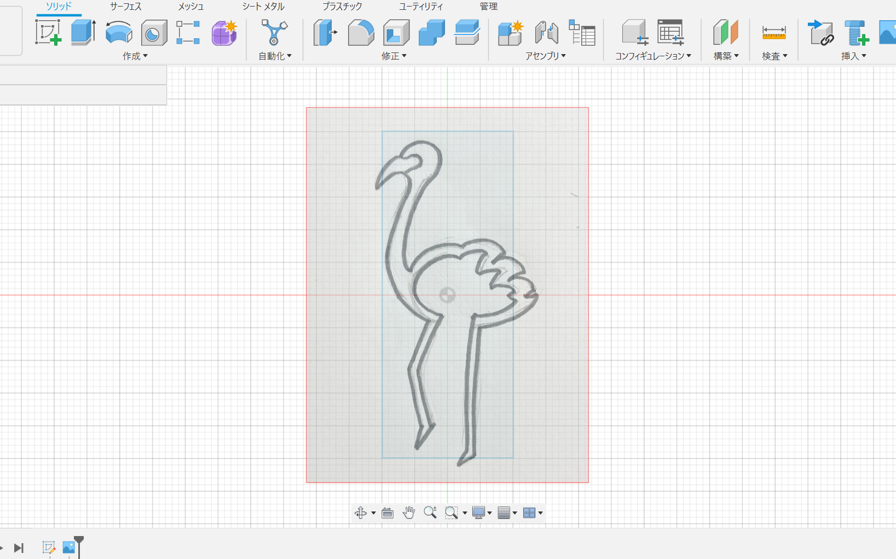
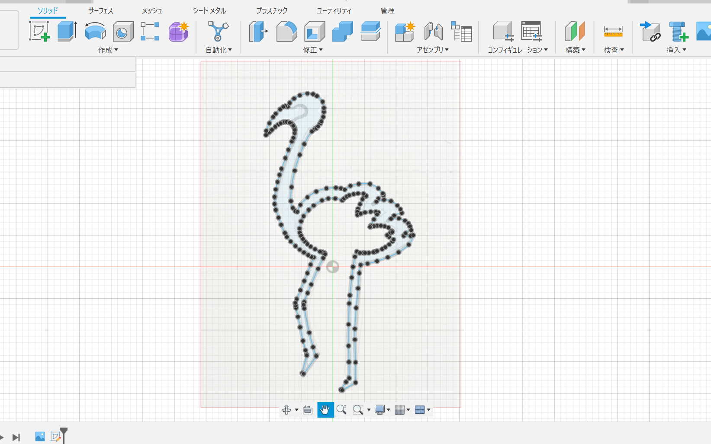

フラミンゴ型ピンセット
完成品

作品説明
フラミンゴの形をしたピンセット。足の部分で物をつかむことができる。
大きさは24mm×48mm×5mm
なぜこの作品を作ろうかと思ったのか
形に特徴のある動物をモチーフにピンセットを作ってみようと考えた。高さに制限があったため、2Dで見た時にも特徴的な動物が良いと思った。そのようなピンセットにできそうな動物は何だろうと考えた時に、足の長いフラミンゴが思いついた
フラミンゴといえば片足は曲げ１本足で立っているイメージがあるが、物をつかめるようにするために足は少しだけ曲げているデザインにした。
スケッチ・試作品


最初に印刷をしてみた時にくちばし部分に入れた凹凸が目立たなかったことと、足の太さの違いが気になったため修正した。
友人に見せたところダチョウに見えるといわれため、改めて画像を検索しデザインを変更した。
制作過程


きれいにフラミンゴの形を作ることが難しかったため、fusionに手書きスケッチの画像を挿入してそれをなぞるようにスケッチを作成した。また、ボディーが大きくなりすぎないように一番最初に20mm×50mmの長方形を描いた。 stlファイル